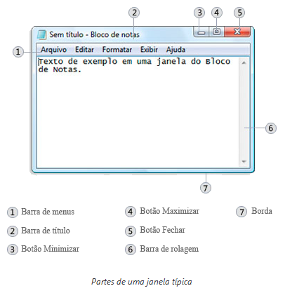

Principais Componentes de uma Janela no Windows
Uma janela é uma área retangular exibida na tela do computador que contém informações, programas ou conteúdos. No Windows, as janelas possuem componentes padronizados que facilitam a interação e a manipulação das informações. A seguir, estão alguns dos principais componentes de uma janela padrão no Windows:
- Barra de Título: Localizada na parte superior da janela, a barra de título exibe o nome do programa ou documento aberto, além dos botões de minimizar, maximizar e fechar.
- Barra de Menus: Geralmente posicionada logo abaixo da barra de título, a barra de menus contém uma série de menus suspensos com opções específicas do programa. Clicar em um menu exibe as opções relacionadas.
- Barra de Ferramentas: Pode estar localizada abaixo da barra de menus ou abaixo da barra de endereço, dependendo do programa. A barra de ferramentas contém botões e atalhos para ações comuns, como copiar, colar, desfazer, salvar, imprimir, entre outros.
- Área de Conteúdo: É a região central da janela, onde o conteúdo principal é exibido. Pode conter texto, imagens, tabelas, formulários ou qualquer outro tipo de conteúdo específico do programa.
- Barra de Rolagem: Se o conteúdo da janela for maior do que o espaço visível, uma barra de rolagem será exibida na vertical e/ou horizontal para permitir a visualização e a navegação pelo restante do conteúdo.
- Barra de Status: Geralmente localizada na parte inferior da janela, a barra de status exibe informações adicionais ou mensagens relacionadas ao programa ou à tarefa em andamento.